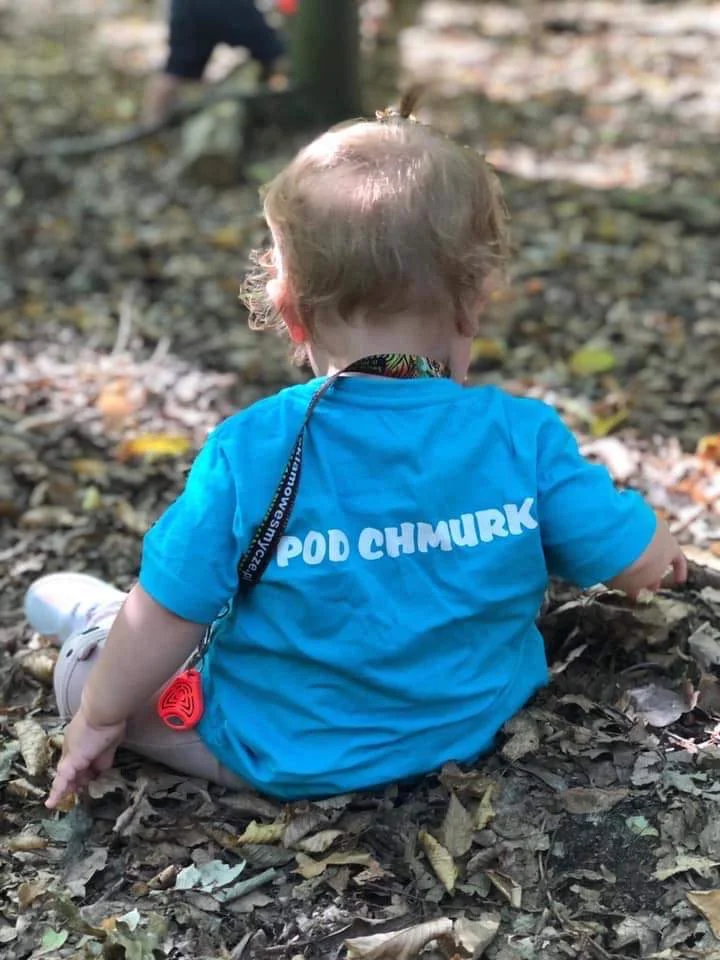
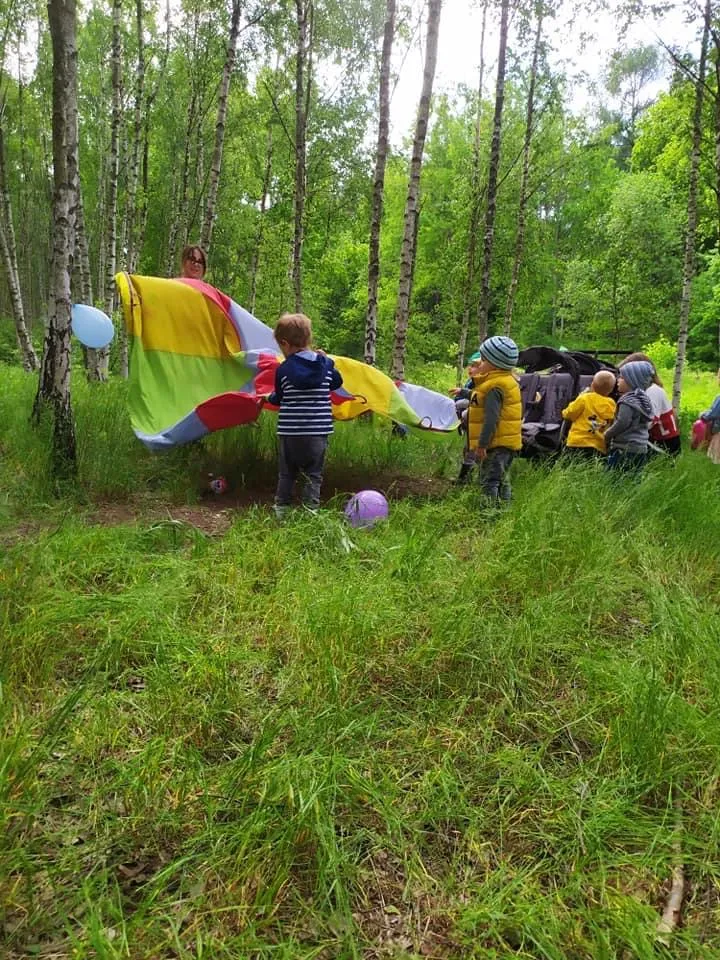

Żłobek na Ursynowie blisko Lasu Kabackiego – Miejsce dla Twojego dziecka
Pod Chmurką dzieci poznają świat we własnym tempie – w małych grupach, pod okiem opiekunek, które znają każde dziecko z imienia. Ponieważ każde dziecko ma prawo być sobą.
ul. Kanarkowa 8, Warszawa-Ursynów (Kabaty)

O nas – prawdziwe domowe ciepło blisko przyrody
Wierzymy w szacunek do emocji malucha, naturalność i swobodę odkrywania świata bez presji. Dajemy przestrzeń na swobodną zabawę i budowanie pewności siebie.
Żłobek Pod Chmurką mieści się przy ul. Kanarkowej 8 na warszawskim Ursynowie, w sąsiedztwie urokliwego Lasu Kabackiego. Tworzymy kameralne miejsce bez korporacyjnego zgiełku, w którym maluchy czują się bezpiecznie, a rodzice mają pełne zaufanie do naszej kadry.
- Małe grupy gwarantujące troskliwą i uważną opiekę
- Ciepłe, empatyczne ciocie z powołaniem
- Zdrowe, zrównoważone posiłki dopasowane do maluchów
- Wyjątkowa lokalizacja na Ursynowie tuż obok Lasu Kabackiego
Każdy dzień to nowa przygoda
Nasz rytm dnia jest stabilny i przewidywalny dla malucha, a zarazem pełen uśmiechu i naturalnego kontaktu z naturą na Ursynowie.
Ciepłe powitanie
Przytulne przyjęcie każdego malucha, swobodna zabawa klockami i układankami w kameralnym gronie rówieśników.
Wyprawy do lasu
Korzystamy z bliskości Lasu Kabackiego – organizujemy bezpieczne spacery, obserwację przyrody i aktywności na świeżym powietrzu.
Rozwój przez zabawę
Zajęcia sensoryczne, muzyczne, plastyczne oraz budowanie samodzielności w przyjaznej, domowej atmosferze.
Z życia żłobka
Zobacz, jak spędzamy czas – autentyczne chwile radości naszych podopiecznych na Ursynowie.

Co mówią rodzice?
Przeczytaj autentyczne opinie o naszej placówce z Google oraz Facebooka.
„Wspaniałe, kameralne miejsce. Panie opiekunki mają niesamowite podejście do dzieci, a bliskość Lasu Kabackiego to ogromny atut. Syn chodził z ogromną radością!”
„Ciepła, domowa atmosfera i pełen profesjonalizm. Czuć, że dobro dziecka jest tu zawsze na pierwszym miejscu. Polecamy z całego serca każdemu rodzicowi z Ursynowa.”
Kontakt i zapisy – Żłobek Ursynów
Szukasz kameralnego żłobka dla swojego dziecka na Ursynowie? Chętnie odpowiemy na pytania o wolne miejsca, adaptację oraz umówimy wizytę w naszej placówce.
- Adres
- Żłobek Pod Chmurką
ul. Kanarkowa 8
02-798 Warszawa-Ursynów (Kabaty / Natolin) - Telefon
- 530 119 251
- zlobekpodchmurka@wp.pl
Lokalizacja i dojazd: Nasz żłobek znajduje się w zacisznej, bezpiecznej okolicy Ursynowa (rejon Kabat i Natolina), tuż obok Lasu Kabackiego. Zapewniamy dogodny dojazd dla rodziców mieszkających w południowej części Warszawy, szukających dla swoich dzieci żłobka o profilu proekologicznym.